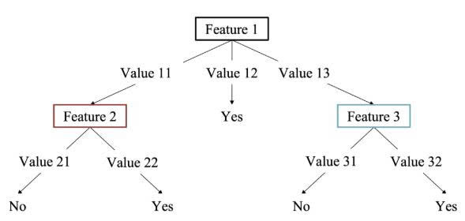

I. Định nghĩa Decision Tree
Cây quyết định (Decision Tree) là phương pháp học có giám sát không tham số, xây dựng mô hình dạng cây để xấp xỉ dữ liệu huấn luyện. Cây gồm các node trong kiểm tra một thuộc tính, các nhánh là giá trị của thuộc tính đó, và node lá cho kết quả (nhãn lớp cho phân loại, giá trị số cho hồi quy).

Đặc trưng của cây quyết định
- Dễ hiểu, trực quan, có thể giải thích được.
- Xử lý được cả dữ liệu số và phân loại.
- Yêu cầu ít tiền xử lý dữ liệu (không cần chuẩn hóa).
- Dễ bị overfitting nếu không cắt tỉa (pruning) hoặc giới hạn độ sâu.
Nội dung dưới chúng ta sẽ cùng tìm hiểu về các chỉ số mà chúng ta đánh giá độ quan trọng của các thuộc tính như Gini, Entropy/Information Gain cho phân loại, và Variance Reduction cho hồi quy.
II. Decision Tree cho bài toán Phân loại
1. Các chỉ số đo độ bất thuần (impurity)
Xét tập dữ liệu \(D\) có \(n\) phần tử, thuộc \(C\) lớp khác nhau. Gọi \(p_j\) là tỷ lệ phần tử trong \(D\) thuộc lớp \(j\) (\(\sum_{j=1}^{C} p_j = 1\)).
a) Chỉ số Gini (Gini Impurity)
- Ý tưởng: Đo xác suất phân loại sai nếu bạn đoán ngẫu nhiên nhãn của một điểm dữ liệu dựa trên thành phần của nhóm đó.
- Đặc điểm: Gini bằng \(0\) khi nhóm hoàn toàn thuần khiết (mọi thứ cùng 1 loại). Giá trị càng cao thì nhóm càng lẫn lộn.
b) Độ đo Entropy
- Ý tưởng: Dựa trên lý thuyết thông tin, đo lường sự "bất ngờ" khi nhận diện một điểm dữ liệu.
- Đặc điểm: Entropy bằng \(0\) khi nhóm thuần khiết hay khi các lớp cân bằng.
c) Sai số phân loại (Classification Error)
- Ý tưởng: Đo lường tỷ lệ phần tử thuộc lớp thiểu số trong một nút.
- Đặc điểm: Đây là thước đo đơn giản nhất, thường ít nhạy cảm hơn với các thay đổi trong quá trình chia tách nút so với Gini hay Entropy.
2. Công thức tính Gain (độ lợi) cho phân loại
Khi phân tách node cha \(D\) thành \(v\) node con \(D_1, ..., D_v\) dựa trên thuộc tính \(A\). Đặt \(n = |D|\), \(n_k = |D_k|\). Trọng số \(w_k = n_k/n\).
- Đo lường hiệu quả chia tách: Gain là thước đo lượng thông tin thu được (hoặc độ lộn xộn giảm đi) sau khi dữ liệu bị cắt đôi hoặc cắt nhỏ.
- Nguyên lý loại bỏ nhiễu: Lấy tổng độ hỗn loạn của trạng thái ban đầu trừ đi tổng độ hỗn loạn của các trạng thái mới sau khi chia.
- Tiêu chuẩn chọn câu hỏi: Thuật toán duyệt qua mọi thuộc tính, tính Gain cho từng thuộc tính, rồi chọn thuộc tính có Gain cao nhất để làm gốc/nhánh cho cây.
a) Reduction in Gini (Gini Gain)
b) Information Gain (dùng Entropy)
3. Ví dụ minh họa (Gini Gain)
B1: Tập \(D\) có 10 mẫu: 6 lớp A, 4 lớp B. \(\text{Gini}(D)=1-(0.6^2+0.4^2)=0.48\).
B2: Ta sẽ tính Gini của từng nhánh con sau khi chia. Thuộc tính X chia \(D\) thành \(D_1\) (7 mẫu: 5A,2B) và \(D_2\) (3 mẫu: 1A,2B).
\(\text{Gini}(D_1)=1-[(5/7)^2+(2/7)^2]=0.408\), \(\text{Gini}(D_2)=1-[(1/3)^2+(2/3)^2]=0.444\).
B3: Trọng số: \(w_1= 7/10 = 0.7, w_2= 3/10 =0.3\). \(\text{Gini}_{\text{tb}} = 0.7×0.408 + 0.3×0.444 = 0.4188\).
B4: \(\text{Gain}_{\text{Gini}} = 0.48 - 0.4188 = 0.0612\).
4. Gain Ratio – Khắc phục thiên vị thuộc tính nhiều giá trị
Vấn đề của Information Gain (hay Gini Gain): Các độ đo này có xu hướng ưu tiên những thuộc tính có nhiều giá trị phân biệt. Ví dụ, xét thuộc tính “Mã số sinh viên” (mỗi sinh viên một giá trị). Nếu phân tách theo thuộc tính này, mỗi nhánh sẽ chỉ chứa đúng một mẫu → tất cả các nhánh đều thuần khiết (Entropy=0, Gini=0). Khi đó, Information Gain đạt giá trị cực đại. Tuy nhiên, cây tạo ra sẽ rất lớn, không có khả năng tổng quát hóa (overfitting).
Gain Ratio được đề xuất để khắc phục nhược điểm này bằng cách chia Information Gain cho một đại lượng gọi là SplitInfo, đo mức độ phân nhánh của thuộc tính.
SplitInfo được tính dựa trên phân phối số lượng mẫu giữa các nhánh:
Trong đó \(v\) là số giá trị khác nhau của thuộc tính \(A\). Nếu \(A\) có nhiều giá trị, các tỷ lệ \(\frac{|D_k|}{|D|}\) thường nhỏ và nhiều thành phần → SplitInfo lớn. Gain Ratio được định nghĩa:
Khi thuộc tính có quá nhiều giá trị, SplitInfo rất lớn, làm GainRatio bị giảm xuống. Nhờ đó, thuật toán không “chuộng” các thuộc tính có nhiều giá trị mà chọn thuộc tính có sự cân bằng giữa khả năng phân tách và độ phân nhánh.
Lưu ý: Trong trường hợp SplitInfo rất gần 0 (thuộc tính hầu như chỉ có một giá trị), GainRatio có thể không xác định. Khi đó người ta thường dùng Gain (hoặc một ngưỡng) để chọn.
III. Decision Tree cho bài toán Hồi quy
1. Độ đo: Phương sai (Variance)
Xét tập \(D\) có \(n\) phần tử, nhãn \(y_i\). Gọi \(\bar{y}\) là trung bình của các nhãn:
- Đo độ phân tán của dữ liệu liên tục: Phương sai tính các giá trị trong 1 nhóm lệch bao xa so với giá trị trung bình của nhóm đó.
- Mục tiêu của Cây hồi quy (Regression Tree): Chia dữ liệu sao cho các nhóm mới có Phương sai nhỏ nhất (các con số trong nhóm giống nhau nhất, tập trung sát vào giá trị trung bình).
Phương sai càng nhỏ, các giá trị càng đồng nhất. Khi tất cả nhãn bằng nhau, \(\text{Var}(D)=0\).
2. Variance Reduction (độ giảm phương sai)
Phân tách node cha \(D\) thành các node con \(D_1,...,D_v\) theo thuộc tính \(A\). Phương sai trung bình có trọng số:
Độ giảm phương sai (Variance Reduction):
Chọn thuộc tính làm giảm phương sai nhiều nhất.
3. Ví dụ minh họa (Variance Reduction)
Tập \(D\) có 6 mẫu với nhãn: \(y = [10, 12, 14, 20, 22, 24]\).
\(\bar{y}=17\), \(\text{Var}(D)=((10-17)^2+...+(24-17)^2)/6 \approx 28.67\).
Giả sử thuộc tính \(A\) tách thành \(D_1\): [10,12,14] (trung bình 12, var=2.67) và \(D_2\): [20,22,24] (trung bình 22, var=2.67).
Trọng số: mỗi tập 3/6=0.5. \(\text{Var}_{\text{tb}} = 0.5×2.67+0.5×2.67=2.67\).
\(\text{Gain}_{\text{Var}} = 28.67 - 2.67 = 26\). Rất cao, chứng tỏ phân tách rất tốt.
V. Kết luận
Decision Tree là mô hình mạnh mẽ, dễ giải thích. Hiểu rõ các chỉ số (Gini, Entropy, Variance) và cách tính gain giúp nắm được cốt lõi của thuật toán. Cần chú ý overfitting – có thể dùng pruning hoặc ensemble (Random Forest, Gradient Boosting).
Trong thực hành, dùng DecisionTreeClassifier với criterion='gini' hoặc 'entropy' cho phân loại, và DecisionTreeRegressor với criterion='squared_error' (MSE) cho hồi quy.